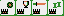

| ↑ | PUEDE FALLAR - Controles Táctiles v1.01 |
|||
| ← | → | SELECT | A | |
| ↓ | START | B | ||
|
Z/X:Aceptar, Arriba/Abajo:Elegir acción, ENTER (Start), CTRL (Select/espiar manos). Kuitan Invalid quiere decir que NO se permite la mano Todo intermedias con mano abierta. Descargar ROM aquí (24kb), Mostrar/Ocultar controles táctiles. |
|
Espadas:
Bastos:
Oros:
Reyes:  Caballos: |